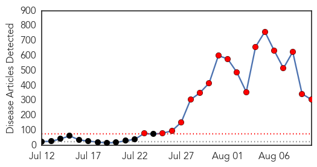
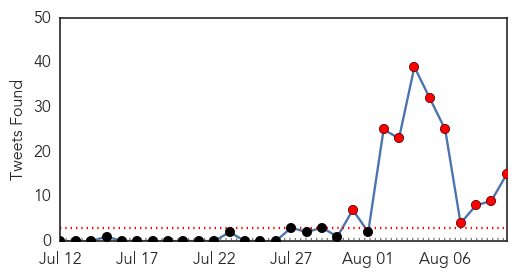

Ebola
30-Day Web Trend
18 alerts, 0 warnings

30-Day Twitter Trend
10 alerts, 0 warnings

Article Locations
Article Confidences
Top Articles:
- 1.000
- Guinea shuts S.Leone, Liberia borders over Ebola
- 1.000
- Nigeria president declares national emergency over Ebola
- 1.000
- WHO declares Ebola epidemic an international health emergency
- 1.000
- Liberia president apologises for high Ebola toll
- 1.000
- Liberia president apologises for high toll for Ebola health workers
- 1.000
- Patient in Brampton, Ont. hospital isolation unit tests negative for Ebola virus
- 1.000
- Liberia president apologises for high toll of Ebola health workers
- 1.000
- Ebola screening at NZ airports - expert responds
- 1.000
- Health officials don’t fear Ebola in Southern California
- 1.000
- First case of Ebola virus in India, admitted in Chennai hospital
- 1.000
- the edge of knowledge
- 1.000
- WHO declares Ebola epidemic a global emergency
- 1.000
- Ebola Outbreak Is a Global Health Emergency
- 1.000
- Ebola: India on Alert, Minister Denies Chennai Case
- 1.000
- International cooperation crucial to block spread of fatal Ebola virus
- 1.000
- W.Africa feels knock-on effects of battle against Ebola
- 1.000
- West Africa feels knock-on effects of battle against Ebola
- 1.000
- 'Vaccine for Ebola to trial next month may be ready by 2015'
- 1.000
- Tracing Ebola’s breakout to a two-year-old
- 1.000
- Facts about Ebola
- 1.000
- President apologises to Liberia's health workers
- 1.000
- Ebola virus: Vaccine 'should be ready for 2015', WHO says, as GSK plays down timing
- 1.000
- The Most Destructive Myths About Ebola Virus, Debunked
- 1.000
- The Ebola Virus Disease: Fears, Beliefs and ....
- 1.000
- What's scary about Ebola, reasons not to fear it
- 1.000
- Was Ebola outbreak 'patient zero' 2-year-old boy from tiny village in Guinea?
- 1.000
- The most from the coast
- 1.000
- Liberia president apologises for high death toll of health workers
- 1.000
- Ebola's 'patient zero' likely a two-year-old boy from Gueckedou, Guinea, who died in December
- 1.000
- Gov’t Boosts Drive vs. Ebola
- 1.000
- Ebola Grips West Africa
- 1.000
- Borders closed, arrivals banned: Ebola outbreak changes a region
- 1.000
- What's scary about Ebola and reasons not to fear it
- 1.000
- Vaccine against Ebola vaccine will not be available before 2015: WHO
- 1.000
- Past epidemics have prepared Canada for Ebola
- 1.000
- Nigerian man suspected of Ebola in Hong Kong - Xinhua
- 1.000
- Chinese Ebola doctors to leave for Africa - Xinhua
- 1.000
- Mass hysteria
- 1.000
- W.Africa feels knock-on effects of battle against Ebola
- 1.000
- Ebola Vaccine For Trial Next Month – WHO
- 1.000
- Sierra Leone Blockades 2 Districts In Attempt To Contain Ebola
- 1.000
- Ebola Virus: Liberia president aplogises and other developments : World, News
- 1.000
- Ebola Patients Wastes Go Into Public Sewage
- 1.000
- Guinea Closes Borders in Bid to Stop Ebola Virus from Spreading
- 1.000
- Hong Kong Patient Not Infected with Ebola
- 1.000
- Romania Hospitalizes Patient with Ebola Symptoms
- 1.000
- Quarantined German Patient Not Infected with Ebola
- 1.000
- Diagnosis of Canadian Citizen Hospitalized with Ebola Symptoms to Become Clear in 24 Hours
- 1.000
- What’s scary about Ebola, reasons not to fear it
- 1.000
- WHO raises alert level, as travel restrictions begin
Showing top 50 articles...
Top Tweets:
- 0.988
- Lets stop ebola.org
- 0.881
- U can survive Ebola.org Like 21 months old Issata survived Ebola in SierraLeone http://t.co/nS4gfy2Qcc
- 0.832
- RT: A Spanish nun left her home in Congo to help in Ebola epidemic in Liberia: She died of the disease today: http://t.c…
- 0.796
- RT: Efforts to stop Ebola outbreak will leave behind stronger labs emergency ops centers &prevent future disease spread http://t.…
- 0.764
- Lets help stop ebola in Liberia follow.org for more updates
- 0.712
- Please Join the ebola fight.org
- 0.691
- EBOLA IS A VERY SCARY DISEASE THE GOOD NEWS IS THAT YOU DON'T HAVE TO GET IT. Spread the newsJoin the fight .org
- 0.624
- Pls take note Very impt to understand how Ebola spreads: 1. Spreads only from sick 2. Not spread by casual contact air or water
- 0.614
- RT: Ebola a huge risk in W. Africa. I share what CDC is doing to stop the outbreak where it starts in piece: htt…
- 0.612
- Bathing with salt & warm water drinking water with salt does NOT cure Ebola.Follow instructions.org
- 0.588
- Get help! @MicatLiberia: Ebola call centre fully operational.Multiple emergency cases being responded to simultaneously.Upts
- 0.572
- About Ebola http://t.co/cuHVPMBGtl ebola
- 0.558
- Ebola symptoms include fever headache body aches cough stomach pain vomiting and diarrhea. Get updates.org
- 0.520
- RT: Man from Nigeria hospitalized in Hong Kong reportedly tests NEGATIVE for Ebola.
- 0.513
- RT: Ebola is caused by an RNA (ribonucleic acid) virus that infects wild animals like fruit bats monkeys gorillas and chimp…
Influenza
30-Day Web Trend
0 alerts, 0 warnings
30-Day Twitter Trend
0 alerts, 0 warnings
Article Locations

Article Confidences

Top Articles:
-
No articles found for Aug 10, 2014
Top Tweets:
-
No tweets found for Aug 10, 2014